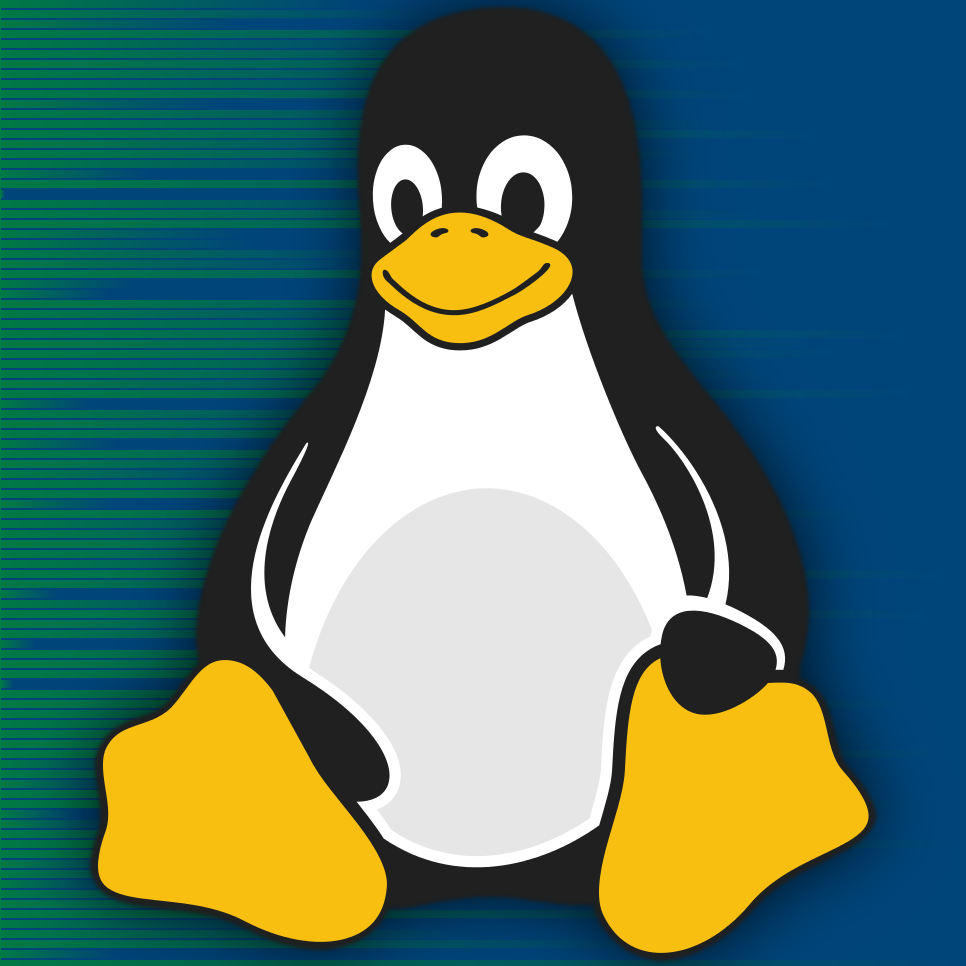

Admins
Os servidores web e a sala de computação do CCM são administrados por alunos do próprio curso.
CMnários
Seminários regulares em tópicos diversos, tanto por alunos quanto por pesquisadores renomados.
Essa página concentra informações sobre as atividades extracurriculares e eventos associados ao Curso de Ciências Moleculares da USP.
Quem mantêm essa página?
Essa página foi criada pelo Joel, administrador da sala de computação da T29, em 2023. Ela é mantida por ele, mas colaboradores que têm interesse no projeto são bem-vindos.
Como conseguir uma página aqui?
Mande um email para o Joel (joelsm@usp.br) ou algum outro mantenedor do site. Nosso foco está em divulgar eventos e organizações relacionadas ao Curso de Ciências Moleculares que ocorrem regularmente ou estão na ativa.